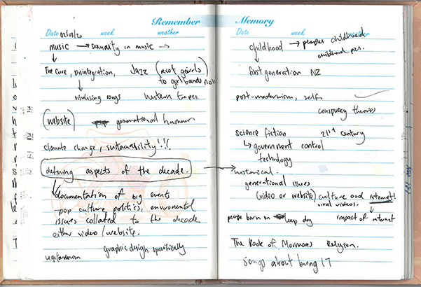
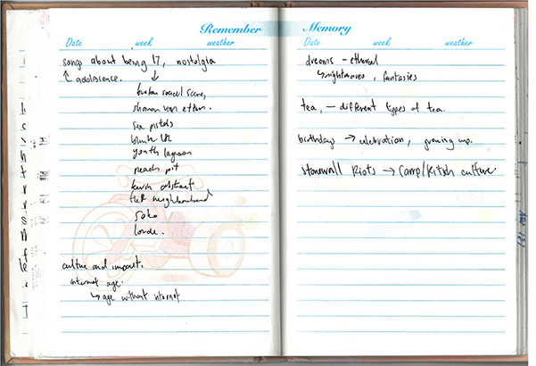

<!doctype html>
<html>
<!-- The head of a web page defines it's metadata -->
<head>
  <meta name="viewport" content="width=device-width, initial-scale=1">
  <script src="https://ajax.googleapis.com/ajax/libs/jquery/3.1.0/jquery.min.js"></script>
  <script src="./js/anthemz.js"></script>
  <link rel="stylesheet" href="./styles/style.css">
  <title> sophgal666 </title>
</head>

<body>
  <div class="a4ty-container">

    <div class="a4ty-video">
      <video width=:"400" height="300" loop muted autoplay>
        <source src="./assets/wolfalice.mp4" type="video/mp4" frameborder="0" allowfullscreen>
      </video>
    </div>

    <div  class="a4ty-col">
      <div class="a4ty-centre">
       <iframe src="https://open.spotify.com/embed/playlist/2EpvClQwFLhcrGHcu6Uwsa" width="300" height="400" frameborder="0" allowtransparency="true" allow="encrypted-media"></iframe>
     </div>
    </div>

    <div class="a4ty-col">
     
    </div>

    <div class="a4ty-col">
      <div class="a4ty-top"
        
        
      </div>
    </div>

    <div class="a4ty-col">
      <audio controls>
        <source src="./assets/3 Mar, 10.03 am truck engine.mp3" type="audio/mpeg">
      </audio>
      <audio controls>
        <source src="./assets/3 Mar, 10.05 am neuron scooter.mp3" type="audio/mpeg">
      </audio>
      <audio controls>
        <source src="./assets/3 Mar, 10.10 am door creaking.mp3" type="audio/mpeg">
      </audio>
      <audio controls>
        <source src="./assets/3 Mar, 10.11 am conv store 2.mp3" type="audio/mpeg">
      </audio>
      <audio controls>
        <source src="./assets/3 Mar, 10.12 am purchase.mp3" type="audio/mpeg">
      </audio>
      <audio controls>
        <source src="./assets/3 Mar, 10.13 am fire crackling.mp3" type="audio/mpeg">
      </audio>
      <audio controls>
        <source src="./assets/3 Mar, 10.17 am construction.mp3" type="audio/mpeg">
      </audio>
      <audio controls>
        <source src="./assets/3 Mar, 10.20 am rubbish bins.mp3" type="audio/mpeg">
      </audio>
      <audio controls>
        <source src="./assets/3 Mar, 10.22 am cicadas.mp3" type="audio/mpeg">
      </audio>
      <audio controls>
        <source src="./assets/3 Mar, 10.22 am cicadas 2.mp3" type="audio/mpeg">
      </audio>
      <audio controls>
        <source src="./assets/3 Mar, 10.37 am vents.mp3" type="audio/mpeg">
      </audio>
      <audio controls>
        <source src="./assets/3 Mar, 10.48 am store radio.mp3" type="audio/mpeg">
      </audio>
    </div>

  </div>


</body>

</html>
